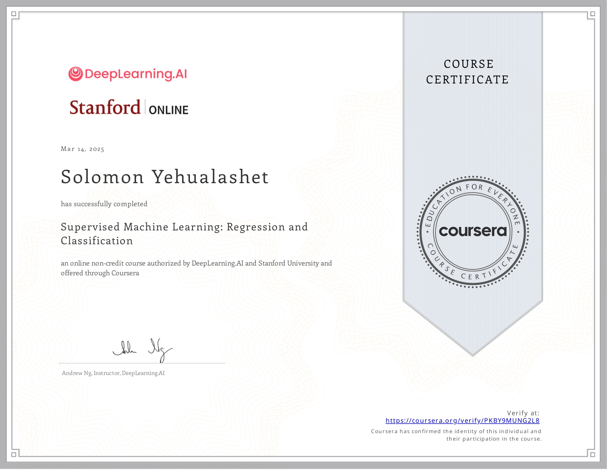
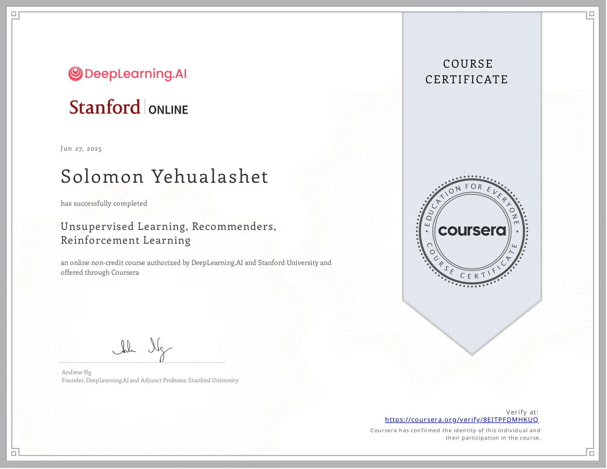

Certified Machine Learning Professional and Computer Science and Engineering student at Adama Science and Technology University. Passionate about Artificial Intelligence, predictive modeling, and data-driven solutions for real-world problems.
Download CVI am Solomon Yehualashet, a dedicated Machine Learning Engineer and Computer Science and Engineering student at Adama Science and Technology University. My academic background and professional training have allowed me to develop strong expertise in Artificial Intelligence, Machine Learning, and Data Science. I hold multiple professional certifications including: • Machine Learning Professional Certification • Supervised Machine Learning Certification • Unsupervised Machine Learning Certification Through these certifications and practical project experience, I have gained strong knowledge in regression models, classification algorithms, clustering techniques, feature engineering, model optimization, and predictive analytics. I am also an active participant in global data science competitions on the Zindi platform, where I collaborate with an international community of data scientists to solve complex real-world machine learning challenges. These competitions help me continuously improve my skills in data preprocessing, model evaluation, and advanced machine learning techniques. My goal is to design intelligent systems that leverage data to support better decision-making and solve impactful problems in industry and society.
Machine learning project designed to predict air pollution levels using environmental and atmospheric data. The project applies data preprocessing, feature engineering, and predictive modeling techniques to analyze pollution trends and support environmental monitoring.
Data science project developed for the Zindi platform to analyze farmer adoption of agricultural training programs. The project focuses on data exploration, feature engineering, and machine learning modeling to identify patterns that influence adoption behavior among farmers.
Implementation of linear regression from scratch focusing on the mathematical formulation of the cost function and gradient descent optimization. The project demonstrates how machine learning models learn by minimizing prediction error during training.
Machine learning model developed to predict tourism patterns using real-world datasets. The project includes data cleaning, feature engineering, and model optimization techniques to improve prediction accuracy.
Supervised machine learning model designed to predict house prices based on features such as location, size, and property attributes using regression algorithms and data analysis.
Professional certification covering machine learning fundamentals, predictive modeling, and real-world AI applications.

Certification covering regression, classification, model evaluation, and training supervised learning models.

Certification covering clustering, dimensionality reduction, and unsupervised data analysis techniques.